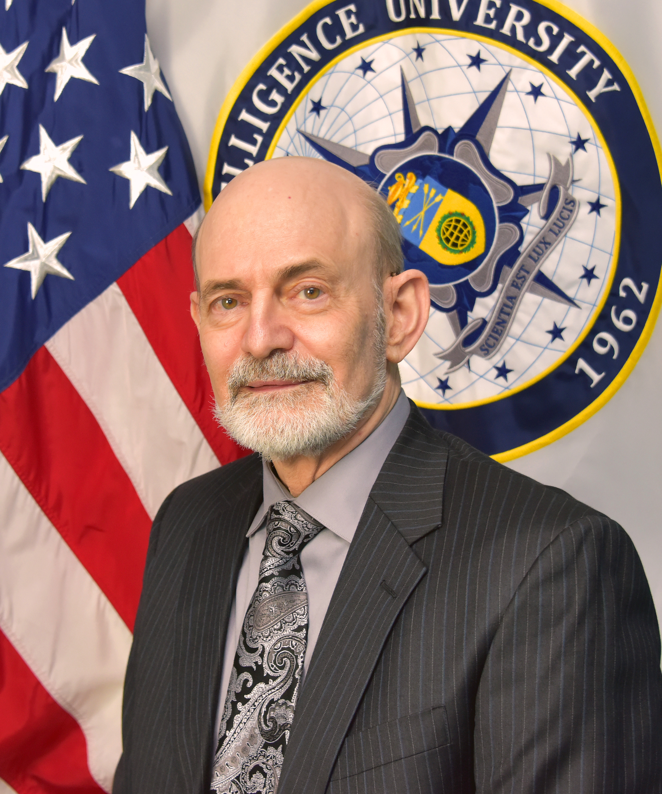

<div class="row">
	<div class="col-md-12">
		<h3>The IEEE 2019 CyberSciTech/DASC/PICom/CBDCom Joint Panel on The Future Direction of Cybersecurity Research</h3>
		<p>
		Latest landscape of cyberattacks can be characterized with the diversification of attack methods using malwares such as targeted attacks, DoS attacks, Drive-by-Download, and with the variety of the attack targets such as governments, CII (automobiles, control systems etc.), companies, IoT devices. In addition, with the advent of new services/applications (e.g. IoT, Cloud, 5G) and technologies (e.g. Fintech, BlockChain), the attackers are able to expand the attack targets and upgrade/improve the attack methods.<br/>
		In order to protect our valuable assets and systems from cyber threats and attacks, with comprehensive consideration through academia, governments, important infrastructures, enterprises and individuals, innovative and challenging cybersecurity measures are expected to be urgently and effectively researched and developed. In such a diverse and rapidly changing environment including increase of attack surfaces, this panel aims at providing an academic roundtable among world-class experts for scholars to brain storming, exchange new ideas and innovative technologies, and even undertake joint research studies about cybersecurity research. The topics include but not limited to:<br/>
		1）Observation of Cyber Threats and Attacks – Events Collections<br/>
		2）Emerging, Promising and Challenging Cybersecurity Technologies<br/>
		3）Observation of Cyber Threats and Attacks<br/>
		4）Big data Analysis for Cybersecurity<br/>
		5）How to share and distribute for Cybersecurity<br/>
		6）How to collaborate and jointly study on Cybersecurity<br/>
		7）How to settle and establish Cybersecurity Policy and Strategy for Research<br/>
		</p>
		
		<h4 name="panel1">Panel Chair & Moderator</h4>
                
                <b>Koji Nakao</b>, <i>National Institute of Information and Communications Technology, Japan</i> <br/>
                <b>Biography</b>: Koji Nakao received the B.E. degree of Mathematics from Waseda University, in Japan, in 1979. Since joining KDDI in 1979, Koji has been engaged in the research on communication protocol, and information security technology for telecommunications in KDDI laboratory. He has started to additionally work for NICT (National Institute of Information and Communications Technology) in 2004 and for Yokohama National University as a guest professor in 2015. Since 2000, he has been conducted for governmental security research projects and involved in International Security Standardization activities.  His present positions are "Distinguished Researcher" to manage research activities for network security technologies in NICT and “Guest Professor” of Yokohama National University. Koji has also been working for CABINET SECRETARIAT as an Advisor of Cybersecurity in Japanese government since April 2017.<br\>
		The followings are the major awards received:<br\>
		Koji received the IPSJ Research Award in 1992, METI Ministry Award and KPMG Security Award in 2006, and Best Paper Award (JWIS) in 2007, the Commendation for Science and Technology award by the Minister of Education, Culture, Sports, Science and Technology (Prizes for Science and Technology: Research Category) in 2009, Lifetime Achievement Awards in ASIA-JCIS in 2012, Ministry Award (contributions for cyber security) from the Ministry of Internal Affairs and Communications in 2015, Fellow-ship of ISC2 in 2017, Fellow-ship of IEICE in 2018 and so on. He is a member of IPJS and IEICE.<br/><br/>
		
		<h4 name="panel2">Panelists</h4>
                
                <b>Stephen S. Yau</b>, <i>Professor, Arizona State University, USA</i> <br/>
                <b>Biography</b>: Stephen S, Yau is Professor of Computer Science and Engineering at Arizona State University (ASU), Tempe, Arizona, USA. He served as the chair of the Department of Computer Science and Engineering, and later as the director of Information Assurance Center at ASU. Previously, he was on the faculties of Northwestern University, Evanston, Illinois, and University of Florida, Gainesville.<br/>
		He served as the president of the Computer Society of the Institute of Electrical and Electronics Engineers (IEEE) and was on the IEEE Board of Directors, and the Board of Directors of Computing Research Association. He served as the editor-in-chief of IEEE COMPUTER magazine. He organized many major conferences, including the 1989 World Computer Congress sponsored by the International Federation for Information Processing (IFIP), and the IEEE Annual International Computer Software and Applications Conference (COMPSAC) sponsored by IEEE Computer Society. He was the general chair of the 2018 IEEE World Congress on Services, including Cloud Computing, Web Services, Services Computing, Big Data. Cognitive Computing, Internet-of-Things, and Edge Computing, held in San Francisco, July 2 – 8, 2018.<br/>
		His current research includes cloud and services computing, cyber security, software engineering, ubiquitous computing and Internet-of-Things. He has received many awards and recognitions, including the Tsutomu Kanai Award and Richard E. Merwin Award of the IEEE Computer Society, the IEEE Centennial Award and Third Millennium Medal, and the Outstanding Contributions Award of the Chinese Computer Federation. He is a Life Fellow of the IEEE and a Fellow of the American Association for the Advancement of Science. He received the B.S. degree from National Taiwan University, Taipei, and M.S. and Ph.D. degrees from the University of Illinois, Urbana, all in electrical engineering.	<br/><br/>
		
		
                <b>Michael David</b>, <i>Professor, The National Intelligence University, USA</i> <br/><br/>
                <b>Biography</b>: Dr. David is a professor at the National Intelligence University (NIU), School of Science & Technology Intelligence, where he teaches courses on Cyber & Data Analytics intelligence issues. He worked with SAIC/Leidos and the Scitor Corporation from October 2009 – March 2014.  Previously, Dr. David worked for the Cubic Corporation of San Diego, Ca. from March 1982 – September 2009.  He served as a vice president in Tokyo, New York City, Singapore and Brussels. His business activities included technology transfer, supply chain acquisition and management and physical access control systems based on secure identity management.<br/>
		Dr. David graduated from Lehigh University with a BS in Industrial Engineering and BA in Foreign Affairs. He holds an MS in System Management from the University of Southern California. As an officer in the U.S. Army, he studied at the Defense Language Institute and the Foreign Service Institute, and is fluent in Japanese. Dr. David is a graduate of the Stanford Graduate School of Business Executive Program, and has also studied Cryptography at the Massachusetts Institute of Technology (MIT) and Swiss Federal Institute of Technology Zurich (ETH). Dr. David completed his doctoral thesis on Critical Infrastructure Protection at Kyushu University, Japan in 2007.<br/>
		Dr. David served on active duty in the US Army in Korea, Okinawa and Japan from 1971 - 1981, and in the Army Reserve from 1981 - 1999. While on active duty, he served in reconnaissance, Special Forces and information warfare units. His last reserve service was as a Political-Military officer at the US Mission to the UN in New York at the rank of Lieutenant Colonel.</a><br/><br/>
		
		
                <b>Zhong Chen</b>, <i>Professor, Peking University, China</i> <br/>
                <b>Biography</b>: Ph.D, Professor of School of EECS at Peking University, and Director of MoE Key Lab of Network and Software Assurance, Director of Financial Information Research Center of Peking University. His research interests include domain-specific software engineering, network and information security, software-hardware co-design etc.<br/>
		Dr. Chen graduated and earned his Ph.D degree from Computer Science and Technology Department of Peking University in 1989, and became faculty of Peking University. He became full professor in 1995. He was a visiting professor of UCLA from 2001 to 2002. He has been assumed the founding dean position of School of Software and Microelectronics, Peking University from 2002 to 2010, Chairman of CS department from 2011-2015.<br/>
		Dr. Chen has published over 100 research papers. He has served in the Technical Program Committee of various international and domestic conferences such as ICC-CISS/GC-CISS/ ICDKE/ICICS/ICESS/InTrust/Inscrypt etc. He was in charge of many national level research projects since 1985 and did commercialization of the research achievements. He has awarded Beijing Excellent Teacher Award in1996, Chinese Youth Scientific and Technological Award in 1997, 2nd Prize National Science and Technology Award in 1998(personal ranking at 4th), 1st Prize National Higher Education Teaching Achievements Award in 2005, 2nd Prize National Science and Technology Award in 2010.<br/>
		As for public service, Dr. Chen is senior member and IoT Expert Committee member of CIE(China Institute of Electronics), Cloud Computing Expert Committee member of CIC(China Institute of Communications), fellow and managing director of CCF(China Computer Federation) and vice-chair of Information Secrecy Professional Committee of CCF, deputy director of China Software Industry Association, chairman of SEMAT China Chapter.</a><br/><br/>
	</div>
</div>
